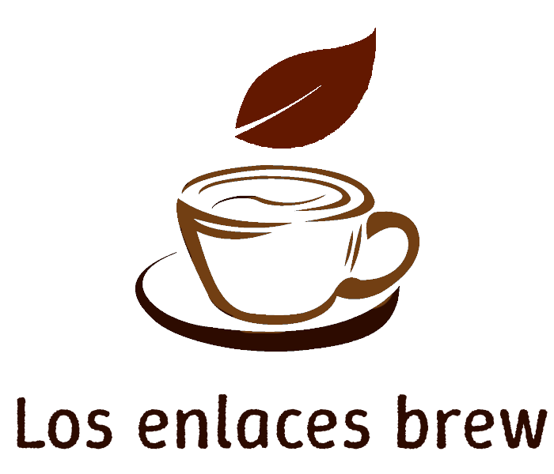
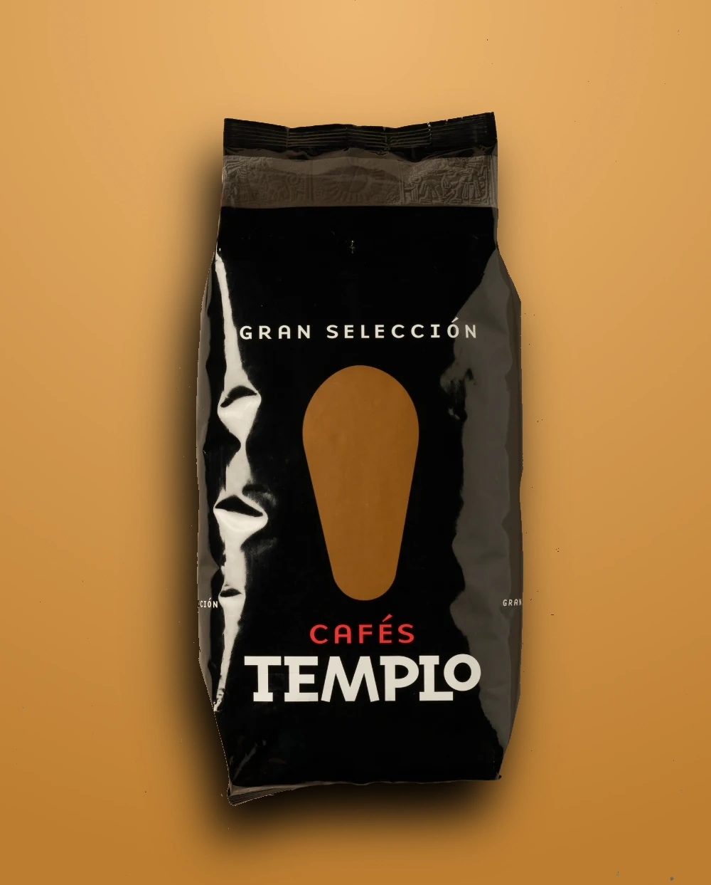
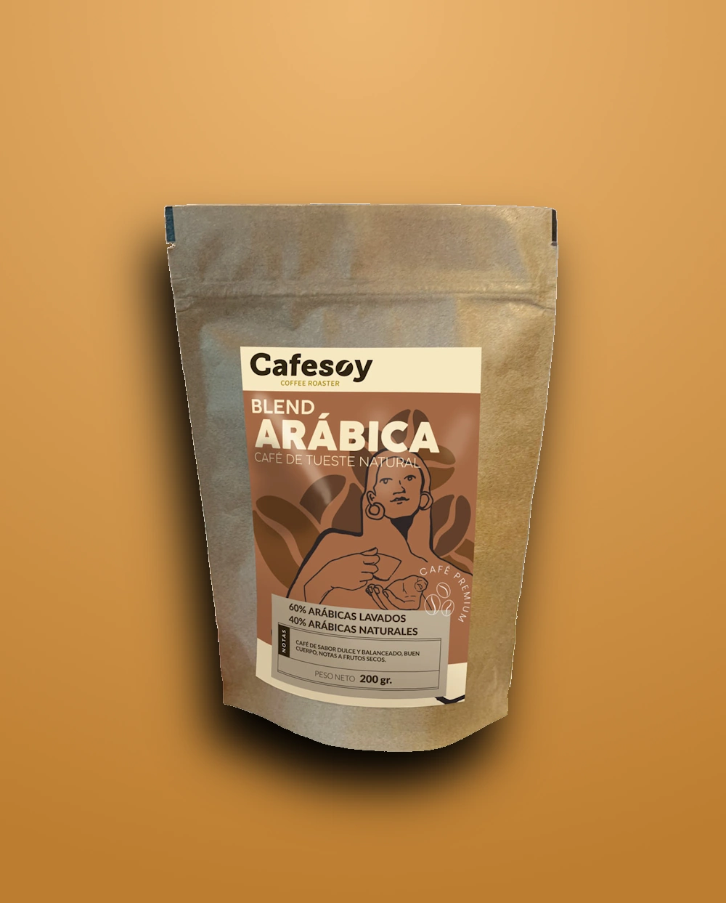
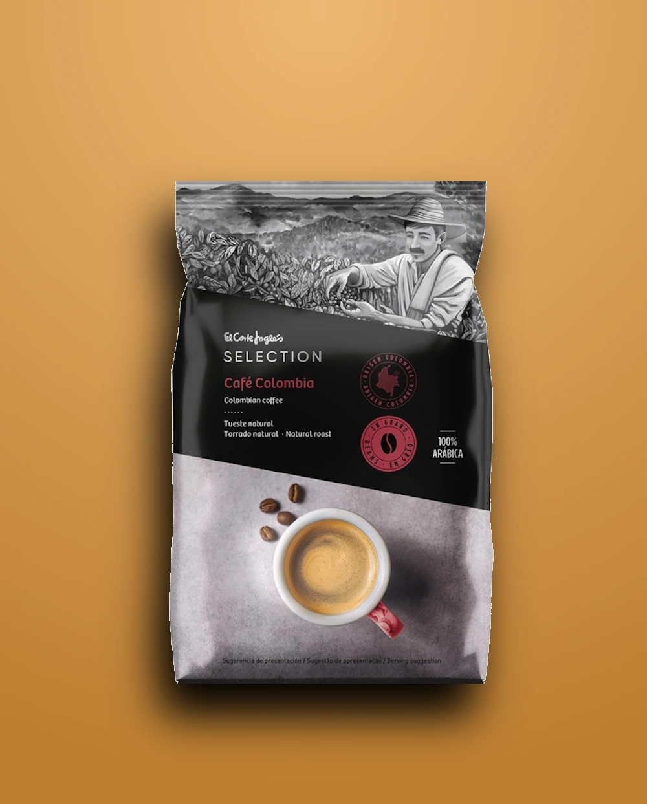

Nuestros productos

Nombre
Descubre el sabor auténtico del café premium. Cada grano cuidadosamente seleccionado para brindarte una experiencia única. Perfecto para disfrutar en cualquier momento del día. ¡Haz de cada taza un momento especial!

Nombre
Nuestro café es más que una bebida, es una experiencia. Con granos de la mejor calidad y un tueste perfecto, te ofrecemos un sabor suave y envolvente que te acompañará en cada sorbo. ¡Pruébalo ahora!

Nombre
El café que estabas buscando: sabor intenso, aroma inconfundible y la frescura que tu día necesita. Con nuestro café, cada taza es una invitación a disfrutar de la vida en su mejor versión. ¡Hazlo tuyo!

Nombre
Transforma tu día con el café que te despierta los sentidos. Su sabor balanceado y su aroma irresistible harán de cada taza una experiencia única. Perfecto para esos momentos donde necesitas más que solo café.

Nombre
Elige lo mejor para tus mañanas. Con granos seleccionados a mano y un proceso de tueste artesanal, nuestro café es el aliado perfecto para empezar el día con energía. ¡Haz de tu café una tradición!

Nombre
Si lo tuyo es el buen café, este es el indicado para ti. Disfruta de una mezcla excepcional, suave y de sabor pleno que te hará querer repetir. Ideal para los que buscan calidad en cada taza.

Nombre
Tu café, tu momento. Dale un toque único a tu rutina con nuestro café gourmet, una mezcla perfecta de granos seleccionados que te brindan el equilibrio ideal entre suavidad y cuerpo. ¡No te quedes sin el tuyo!

Nombre
Siente la diferencia con cada taza. Nuestro café está hecho con granos de origen seleccionado y tostado a la perfección para ofrecerte un sabor único y delicioso. Ideal para aquellos que buscan calidad y un toque especial en su día.